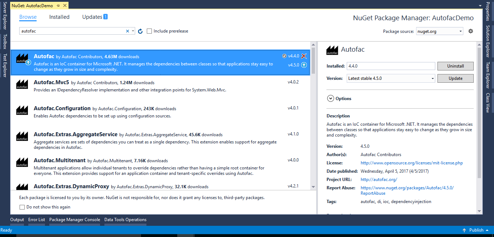

Getting Started¶
The basic pattern for integrating Autofac into your application is:
Structure your app with inversion of control (IoC) in mind. Add Autofac references. At application startup… Create a ContainerBuilder. Register components. Build the container and store it for later use. During application execution…
Create a lifetime scope from the container¶
Use the lifetime scope to resolve instances of the components. This getting started guide walks you through these steps for a simple console application. Once you have the basics down, you can check out the rest of the wiki for more advanced usage and integration information for WCF, ASP.NET, and other application types.
Structuring the Application¶
The idea behind inversion of control is that, rather than tie the classes in your application together and let classes “new up” their dependencies, you switch it around so dependencies are instead passed in during class construction. Martin Fowler has an excellent article explaining dependency injection/inversion of control if you want more on that.
For our sample app¶
we’ll define a class that writes the current date out. However, we don’t want it tied to the Console because we want to be able to test the class later or use it in a place where the console isn’t available.
First Step¶
We’ll also go as far as allowing the mechanism writing the date to be abstracted, so if we want to, later, swap in a version that writes tomorrow’s date, it’ll be a snap.
Add Autofac References¶
The first step is to add Autofac references to your project. For this example, we’re only using core Autofac. Other application types may use additional Autofac integration libraries..
Image¶
The easiest way to do this is through NuGet. The “Autofac” package has all the core functionality you’ll need.
